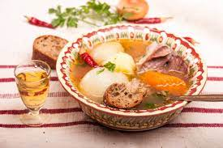

Нужните продукти:
1. Телешки гърди (около 700 гр.)
2. Олио/ зехтин (1 с. л.)
3. Лук (50 гр.)
4. Сол (4 ч. л.)
5. Моркови (около 100 гр.)
6. Магданоз (10 гр.)
7. Целина (30 гр.)
8. Корени от магданоз (1 бр.)
9. Домати (около 100 гр.)
10. Черен пипер (1-2 гр.)
11. Картофи (250 гр.)
Рецепта:
Телешките гърди се поставят в подходящ съд, заливат се с 6 чаши гореща вода, посоляват се. Добавя се корен магданоз и се вари на слаб огън, като постоянно се отпенва. Бульонът се прецежда, а месото се обезкостява и се нарязва на по - едри парчета. В горещия бульон се прибавят нарязаните на кръгчета моркови и целината, а 10 минути след като кипнат, се добавят картофите, нарязани на кубчета, доматите, срязани на четвъртинки, и обезкостеното месо. След сваряването на картофите яденето се смъква от огъня, добавя му се черен пипер и се посолява при нужда. При сервиране телешкото варено се посипва със ситно нарязан магданоз.
Допълнителна информация:
Телешкото варено е перфектната комбинация с една типично българаска 50 градусова ракия от на Ефтим сайта.